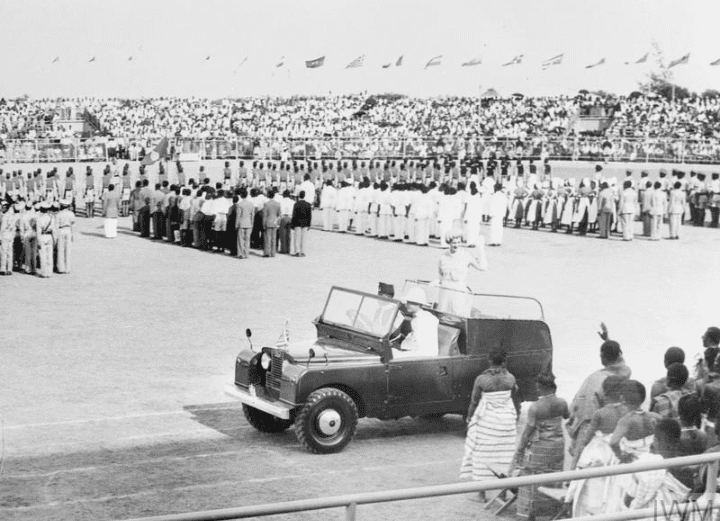

Independence
Explore Ghana's journey to independence through speeches, photographs, documents, and historic events.
Learn more →Explore Ghana's rich history through carefully curated stories, photographs, documents, and resources from trusted archives, libraries, museums, and heritage institutions.
Explore the Collections
From Ghana's struggle for independence to the richness of its cultural traditions, explore curated collections that bring the nation's history to life.
Explore Ghana's journey to independence through speeches, photographs, documents, and historic events.
Learn more →
Discover records, maps, and stories from the colonial era and their impact on Ghana's history.
Learn more →
Discover Ghana's traditional kingdoms, historic states, festivals, customs, and cultural traditions.
Learn more →FEATURED COLLECTION
Explore the story of Ghana's independence through a carefully curated collection of speeches, archival photographs, government documents, newspapers, books, documentaries, and scholarly resources.
Explore the Collection


Explore curated historical resources including archival photographs, books, newspapers, government documents, maps, and audiovisual materials from trusted archives, libraries, museums, and research institutions.